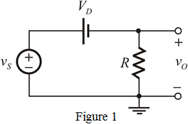
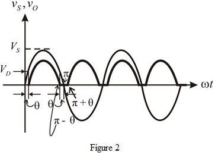

Step 1:
Refer to Figure 4.22 in the textbook for the full wave rectifier circuit.
In this full wave rectifier, one diode, either  or
or  conducts at any time.
conducts at any time.
During positive half cycle, the diode  is forward biased or conducts and the diode
is forward biased or conducts and the diode  is reverse biased or do not conduct. During negative half cycle, the diode
is reverse biased or do not conduct. During negative half cycle, the diode  is forward biased or conducts and the diode
is forward biased or conducts and the diode  is reverse biased or do not conduct.
is reverse biased or do not conduct.
Here, each diode has a voltage drop of 0.7 V and in either cycle, one diode conducts.
The diode  in the circuit can be replaced with its piece-wise linear model, that is, the diode
in the circuit can be replaced with its piece-wise linear model, that is, the diode  is replaced by in series.
is replaced by in series.
Neglecting the effect of , the equivalent circuit for the right side upper portion of the Center tap is shown in Figure 1.

Step 2:
Apply Kirchhoff’s Voltage Law to the circuit.
…… (1)
The input to the full-wave rectifier is,  .
.
The output is obtained with the help of equation (1). The diode conducts during both the half cycles.
The input/output waveforms together are shown in Figure 2.

Step 3:
In the waveform in Figure 2, is the angle at which the input signal reaches  and the diode starts conducting. The diode conduction terminates at
and the diode starts conducting. The diode conduction terminates at  and the hence the total conduction angle is
and the hence the total conduction angle is  or .
or .
Consider the following by observing the waveform:
The average value (dc component) of the output is,
From the waveform,
The limits of the integration are from
Recall equation (1).
Here,  in the interval
in the interval  and also the same in the interval
and also the same in the interval 
Step 4:
Evaluate the integral over the first interval and make it twice.
Now let , then and as is very small.
Therefore,
…… (2)
Step 5:
(a)
The average output voltage is
Substitute 10 V for in equation (2) to calculate the value of  .
.
Step 6:
The rms voltage of the input is,
Thus, the peak value of the input voltage is,
Write the formula for the turns ratio of the transformer.
Substitute for  and for
and for  .
.
Therefore, the transformer turns ratio for each half of the secondary is .
Step 7:
(b)
The average output voltage is,
Substitute 100 V for in equation (2) to calculate the value of  .
.
Write the formula for the turns ratio of the transformer.
Substitute  for
for  and for
and for  .
.
Therefore, the transformer turns ratio for each half of the secondary is  .
.